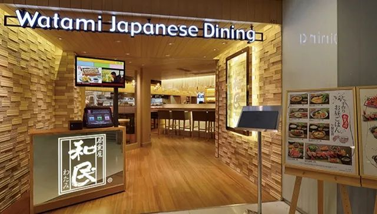
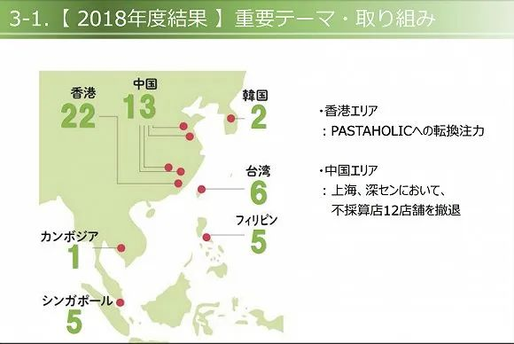

咖啡奶茶，盼你复工
原文链接 备份链接 《创新经济战疫计划》，是燃财经在新型肺炎疫情期间推出的特别栏目，关注创新经济企业遇到的新难题、商讨应该采取的新对策，希望能够帮助中小企业一起战胜挑战、把握机会。 作者 | 唐亚华 编辑 | 魏佳 2月10日起，北京、上 …

来源：品牌官网
记者：卢奕贝 编辑：牙韩翔
“
此前，经营不善已让和民陆续关掉了在中国内地的大部分门店。
”
开了16年的日式居酒屋“饗和民”深圳万象城店在今天正式结束营业了。
根据微信公众号“深圳吃货小分队”的报道，该店铺门口已经贴上了闭店通知，表示因合约到期以及公司品牌战略调整，公司决定于2020年3月1日起正式关闭饗和民万象城店。

和民深圳万象城店门口的闭店通知。来源：深圳吃货小分队
和民（Watami）是一个日本大众居酒屋连锁品牌，主要出售日式料理、日式小食、酒类等食品。2001年，品牌母公司和民集团在香港开出了第一家海外分店，2005年正式进入内地，陆续在深圳、上海成立公司，经营和民居酒屋、饗和民、內亭等品牌。
此前，和民集团曾于2月5日发表声明表示，由于新冠肺炎疫情导致其在中国的店铺营业时间缩短，来店顾客数量以及销售业绩都呈大幅下降趋势，加之对疫情平息时间无法预估，将在今春前退出中国市场。此次将关闭该集团在中国内地仅剩的11个门店中的7家直营店，其余4家因合约问题无法立即停业。同时，香港及台湾地区的分店将继续营业。
这也是疫情发生以来，首家从中国内地撤退的日本企业。
和民集团在中国内地的发展曾有过辉煌。2014年的巅峰时期，在中国大陆地区的店铺数量达到42家，此后几年也一直保持着迅猛的发展势头。
到2016年，和民集团曾宣布要重组中国业务，计划与海航集团旗下的餐饮企业新设立合资公司，将店铺经营由直营方式转换为合资加盟方式，将加速在未进驻地区开店，计划尽快将中国大陆的店铺数量增加3倍，达到100家。
2017年，海航集团旗下爱其原味餐饮（HMV Cultural F＆B）宣布收购和民中国业务（上海、深圳、广州及苏州）60%股权。
但好景不长，和民此后在中国内地的经营并不顺利。虽然财报中并没有公布中国内地业务的具体数据，但根据2019年3月公布的2018年度财报，这一年，因“无利可图”，和民集团已经关闭了在中国内地的12间门店，仅剩13家。

此前，和民因经营不善，已关闭了在中国内地的12家门店。来源：财报截图
100家门店的开店计划也随着2019年和民集团宣布取消合并，并完成回购和民（中国地区）60%股权，戛然而止。然而此后和民在中国内地的经营情况并没有好转，关店的脚步也没有停歇。
截至2020年初，和民集团在中国上海、深圳、广州等地仅拥有有11家店铺，其中的7家直营店分别是“和民”上海SOHO复兴广场、深圳东门店、深圳九方广场、广州高德置地广场、苏州泉屋百货，“三文鱼传说和民”上海大宁国际、“迎和民”深圳华润万象城。
经营不善、陆续关店的和民集团本已是处在危机的边缘，而新冠肺炎疫情的爆发，让全中国的餐饮行业都陷入被动。
根据中烹协调研数据，相比去年春节，疫情期间，78%的餐饮企业营收损失达100%以上；9%的企业营收损失达到九成以上。而恒大研究院的数据显示，仅在春节七天内，疫情已对餐饮行业零售额造成5000亿元左右的损失。
和民集团也最终下定决心，彻底退出中国内地市场。
未经授权 禁止转载

文章已于修改
原文链接 备份链接 《创新经济战疫计划》，是燃财经在新型肺炎疫情期间推出的特别栏目，关注创新经济企业遇到的新难题、商讨应该采取的新对策，希望能够帮助中小企业一起战胜挑战、把握机会。 作者 | 唐亚华 编辑 | 魏佳 2月10日起，北京、上 …
原文链接 备份链接 ***************************************▲*************春节前，日本生活空间nikoand在上海开设全球最大旗舰店，开业当天，成百上千的消费者在淮海中路分批排队，预计等 …
原文链接 备份链接 图片来源：I.T 记者：张馨予 编辑：周卓然 “ I.T集团在2019年8月至年底裁员共300余人，如今集团又推出无薪假期计划。 ” 近日据多家香港媒体报道，香港潮流服饰零售商I.T集团在公司推行无薪假期计划，此前还有 …
原文链接 备份链接 《创新经济战疫计划》，是燃财经在新型肺炎疫情期间推出的特别栏目，关注创新经济企业遇到的新难题、商讨应该采取的新对策，希望能够帮助中小企业一起战胜挑战、把握机会。 作者 | 闫丽娇 编辑 | 周昶帆 刚刚过去的2月15 …
原文链接 备份链接 ***********************刘爱国 | 文 *********************** 中国的公共卫生体系改革，历来是诸多系统性改革中，最复杂、最纠结的领域之一。 作为公共卫生的重要一环，2002 …